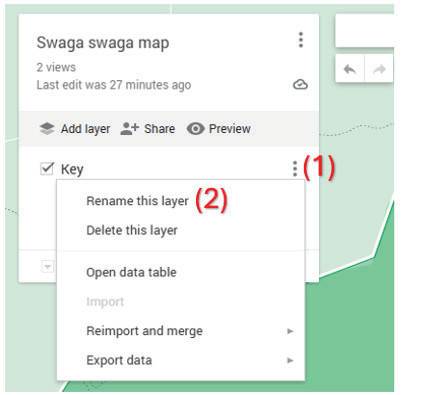
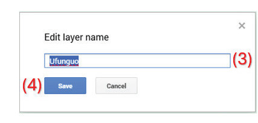
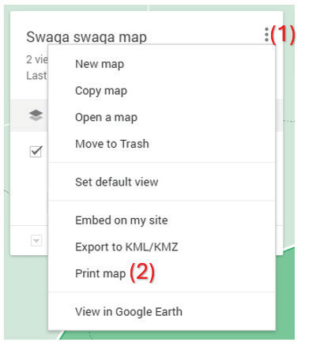
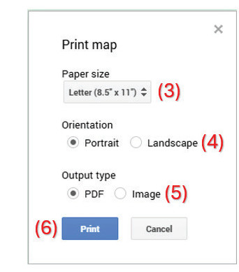

9. Kuweka ufunguo wa ramani bofya vidoti vitatu vya chini (1) upande wa kushoto wa ramani, chagua “Rename this layer” (2), andika neno ufunguo kwenye boksi la “Edit layer name” (3), kisha bofya kitufe cha “Save” (4), kama inavyowasilishwa katika Kielelezo namba 14.


10. Chapisha ramani yako kwa ajili ya matumizi ya baadaye. Ramani ya kidijitali inaweza kuchapishwa kwa njia mbili. Njia ya kwanza ni kuchapisha kama faili la PDF na njia ya pili ni kuchapisha kama picha. Ili kuweza kufanya hivyo, nenda kwenye vidoti vitatu (1), kisha chagua neno “Print map” (2), kama inavyowasilishwa katika Kielelezo namba 15.

